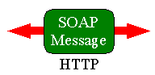

The Satellite Situation Center (SSC) is a system to cast geocentric spacecraft location information into a framework of (empirical) geophysical regions and mappings of spacecraft locations along lines of the Earth's magnetic field. This capability is one key to mission science planning (both single missions and coordinated observations of multiple spacecraft with ground-based investigations) and to subsequent multi-mission data analysis. While SSCWeb provides access to the system through an HTML-based user interface, these Web services provides a distributed programming interface to SSC. Figure 1.1-1 shows a simplified view of the software architecture.
| SSC Client Program |
SSC Web services |
|
|---|---|---|
| SSC Unique Client Artifacts |
SSC Unique Server Artifacts |
|
| JAX-WS Runtime |  | JAX-WS Runtime |
Table 1.1-1 describes each component in more detail.
| Component | Description | Source |
|---|---|---|
| SSC Client Program | A SSC client program. It may use the SSC unique artifacts and JAX-WS or some other runtime support library. | Developed by any organization wishing to use the SSC Web services. |
| SSC Unique Client Artifacts | SSC unique client wrapper to the JAX-WS library. This code is generated by the wsimport tool included with the Java EE. | Provided in the SSC Web services SDK by the group which developed the SSC Web services. |
| JAX-WS runtime | JAX-WS runtime which handles the actual formatting and sending and receiving of SOAP messages. | Java EE Application Server. |
| SSC Unique Ties | SSC unique server wrapper to the JAX-WS library. This code is generated by the wsgen tool included with the Java EE. | Automatically generated by the Web Application Server when the SSC Web services are deployed. |
| SSC Web services | The implementation of the SSC Web services. This component interfaces with existing SSC software and data to fulfill Web service requests. | Delivered with the SSC Web services by the group which developed the SSC Web services. |
This sections describes issues related to utilizing the SSC Web Services API from any type of client. That is, the issues described in this section apply to all clients irrespective of the programming language/tools used to develop the client or runtime enviroment in which the client is executed. The following issues are common to all types of clients:
These issues are described below.
You are strongly encouraged to have your client set the HTTP User-Agent header (RFC 2068) to a value that identifies your client application in each SSC Web Service request that it makes. This will allow us to measure the usefulness of these services and justify their continued support. It isn't too important what value you use but it's best if it uniquely identifies your application. The specifics of how to do this in the client varies depending upon the programming language and support libraries used for the client. The example Java client described below contains the code required to set the header in a Java/JAX-RPC client. If you are unable or unwilling to set the User-Agent value in your client but still want us to know that your client uses the SSC Web Services, you may send a description of your client and any comments about the SSC Web Services to SSC.
There are server computer resource limits imposed on the SSC Web services. While these limits are not expected to be limiting for legitimate requests, making requests for a long period of time or for a large number of spacecraft can exceed these limits and result in a "request exceeded computer resource limits" exception. A client may want to be prepared to deal with such occasions.
The WSDL file provides a standard description of SSC web services. The file is available from http://sscweb.gsfc.nasa.gov/WS/ssc/2/SatelliteSituationCenterService?wsdl. You may want to save the file to your computer's disk for later use.
| Note |
|---|
| Depending upon your browser's XML capabilities and how it handles an XML file that doesn't contain any style information, you may need to use the browser's "view source" option to view the WSDL in the browser. Recent versions of Internet Explorer and Mozilla will have no problem displaying the WSDL. Alternately, you may force the browser to save the WSDL file and view it using another application. The file should be viewable in a simple text editor. |
Many programming languages now understand WSDL and can use this file to automatically invoke SSC services. For example, the WSDL can be imported into .NET, converted into Java code using the JAX-WS wsimport tool, or used directly by Interactive Development Environments (IDEs) like Netbeans. Refer to your particular development tools' documentation to learn how to use the provided WSDL file to develop a client application. If you are developing your client in a language other than Java or don't want to use the included Java library, then you must use the WSDL and can ignore the next section.
For convenience, we have included a Java library based upon JAX-WS. It is not necessary to use this library but it will be the easiest way for someone developing a Java client to access the SSC Web Services. You may use the WSDL described above along with any other standards complying web service development tools to develop a client instead of using this library.
The Java API provides an easy to use, high level API for accessing the SSC web services. It was developed using JAX-WS 2.0. Here is a description of the SSC Web services Java API . In order to use the Java library include in this SDK, you must already have a Java 1.5 development environment with the JAX-WS 2.0 run-time class libraries or Java 1.6 which includes the JAX-WS run-time class libraries.
The sscWebServiceJaxWs-client.jar library provided with this kit contains an application that can be used to test the client run-time environment with the SSC web services. To use the test client, use the equivalent of the following, single line command for your environment:
java -jar sscWebServicesJaxWs-client.jar http://sscWeb.gsfc.nasa.gov/WS/ssc/2/SatelliteSituationCenterService?wsdl
This should produce output similar to the following:
Privacy and Important Notices:
http://www.nasa.gov/about/highlights/HP_Privacy.html
Time to execute getPrivacyAndImportantNotices = 1.421seconds
Satellites:
ace ACE 720s 1997-08-26T00:00:00Z - 2007-06-13T14:48:00Z http://sscweb.gsfc.nasa.gov/WebServices/resources/geometry/ace_sc.x3d http://sscweb.gsfc.nasa.gov/WebServices/resources/geometry/ace_t.x3d
active Active 60s 1989-09-29T00:00:00Z - 1991-10-04T08:00:00Z http://sscweb.gsfc.nasa.gov/WebServices/resources/geometry/active_sc.x3d http://sscweb.gsfc.nasa.gov/WebServices/resources/geometry/active_t.x3d
akebono Akebono 60s 1989-02-23T00:00:00Z - 2007-07-08T00:00:00Z http://sscweb.gsfc.nasa.gov/WebServices/resources/geometry/akebono_sc.x3d http://sscweb.gsfc.nasa.gov/WebServices/resources/geometry/akebono_t.x3d
apex APEX-MAIN 60s 1991-12-17T00:00:00Z - 2004-05-01T00:00:00Z http://sscweb.gsfc.nasa.gov/WebServices/resources/geometry/apex_sc.x3d http://sscweb.gsfc.nasa.gov/WebServices/resources/geometry/apex_t.x3d
astrid2 ASTRID II 60s 1998-12-12T00:00:00Z - 2002-04-03T00:00:00Z http://sscweb.gsfc.nasa.gov/WebServices/resources/geometry/astrid2_sc.x3d http://sscweb.gsfc.nasa.gov/WebServices/resources/geometry/astrid2_t.x3d
cce CCE (AMPTE/CCE) 60s 1984-08-17T00:00:00Z - 1988-01-01T08:00:00Z http://sscweb.gsfc.nasa.gov/WebServices/resources/geometry/cce_sc.x3d http://sscweb.gsfc.nasa.gov/WebServices/resources/geometry/cce_t.x3d
champ CHAMP 60s 2000-11-09T00:00:00Z - 2007-07-08T00:00:00Z http://sscweb.gsfc.nasa.gov/WebServices/resources/geometry/champ_sc.x3d http://sscweb.gsfc.nasa.gov/WebServices/resources/geometry/champ_t.x3d
chandra Chandra 60s 2007-01-05T00:46:00Z - 2007-07-10T00:00:00Z http://sscweb.gsfc.nasa.gov/WebServices/resources/geometry/chandra_sc.x3d http://sscweb.gsfc.nasa.gov/WebServices/resources/geometry/chandra_t.x3d
cluster1 Cluster-1 60s 2000-08-09T12:41:59Z - 2010-01-01T01:58:59Z http://sscweb.gsfc.nasa.gov/WebServices/resources/geometry/cluster1_sc.x3d http://sscweb.gsfc.nasa.gov/WebServices/resources/geometry/cluster1_t.x3d
cluster2 Cluster-2 60s 2000-07-16T14:07:59Z - 2010-01-01T00:10:59Z http://sscweb.gsfc.nasa.gov/WebServices/resources/geometry/cluster2_sc.x3d http://sscweb.gsfc.nasa.gov/WebServices/resources/geometry/cluster2_t.x3d
cluster3 Cluster-3 60s 2000-07-16T14:07:59Z - 2010-01-01T00:57:00Z http://sscweb.gsfc.nasa.gov/WebServices/resources/geometry/cluster3_sc.x3d http://sscweb.gsfc.nasa.gov/WebServices/resources/geometry/cluster3_t.x3d
cluster4 Cluster-4 60s 2000-08-09T12:41:59Z - 2010-01-01T00:36:00Z http://sscweb.gsfc.nasa.gov/WebServices/resources/geometry/cluster4_sc.x3d http://sscweb.gsfc.nasa.gov/WebServices/resources/geometry/cluster4_t.x3d
crres CRRES 60s 1990-07-25T23:00:00Z - 1991-12-04T08:00:00Z http://sscweb.gsfc.nasa.gov/WebServices/resources/geometry/crres_sc.x3d http://sscweb.gsfc.nasa.gov/WebServices/resources/geometry/crres_t.x3d
de1 DE-1 60s 1981-08-03T10:37:59Z - 1991-03-02T08:00:00Z http://sscweb.gsfc.nasa.gov/WebServices/resources/geometry/de1_sc.x3d http://sscweb.gsfc.nasa.gov/WebServices/resources/geometry/de1_t.x3d
de2 DE-2 60s 1981-08-04T00:00:00Z - 1983-02-19T12:19:00Z http://sscweb.gsfc.nasa.gov/WebServices/resources/geometry/de2_sc.x3d http://sscweb.gsfc.nasa.gov/WebServices/resources/geometry/de2_t.x3d
demeter DEMETER 60s 2004-08-31T00:00:00Z - 2007-04-30T05:49:00Z http://sscweb.gsfc.nasa.gov/WebServices/resources/geometry/demeter_sc.x3d http://sscweb.gsfc.nasa.gov/WebServices/resources/geometry/demeter_t.x3d
dmspf10 DMSP-10 60s 1990-12-02T00:00:00Z - 1999-09-12T00:00:00Z http://sscweb.gsfc.nasa.gov/WebServices/resources/geometry/dmspf10_sc.x3d http://sscweb.gsfc.nasa.gov/WebServices/resources/geometry/dmspf10_t.x3d
dmspf11 DMSP-11 60s 1991-11-29T00:00:00Z - 2003-09-09T00:00:00Z http://sscweb.gsfc.nasa.gov/WebServices/resources/geometry/dmspf11_sc.x3d http://sscweb.gsfc.nasa.gov/WebServices/resources/geometry/dmspf11_t.x3d
dmspf12 DMSP-12 60s 1994-09-16T00:00:00Z - 2003-09-09T00:00:00Z http://sscweb.gsfc.nasa.gov/WebServices/resources/geometry/dmspf12_sc.x3d http://sscweb.gsfc.nasa.gov/WebServices/resources/geometry/dmspf12_t.x3d
dmspf13 DMSP-13 60s 1995-04-13T00:00:00Z - 2007-04-29T00:00:00Z http://sscweb.gsfc.nasa.gov/WebServices/resources/geometry/dmspf13_sc.x3d http://sscweb.gsfc.nasa.gov/WebServices/resources/geometry/dmspf13_t.x3d
dmspf14 DMSP-14 60s 1997-04-20T00:00:00Z - 2007-04-29T00:00:00Z http://sscweb.gsfc.nasa.gov/WebServices/resources/geometry/dmspf14_sc.x3d http://sscweb.gsfc.nasa.gov/WebServices/resources/geometry/dmspf14_t.x3d
dmspf15 DMSP-15 60s 1999-12-13T00:00:00Z - 2007-04-29T00:00:00Z http://sscweb.gsfc.nasa.gov/WebServices/resources/geometry/dmspf15_sc.x3d http://sscweb.gsfc.nasa.gov/WebServices/resources/geometry/dmspf15_t.x3d
dmspf16 DMSP-16 60s 2003-10-18T00:00:00Z - 2007-04-29T00:00:00Z http://sscweb.gsfc.nasa.gov/WebServices/resources/geometry/dmspf16_sc.x3d http://sscweb.gsfc.nasa.gov/WebServices/resources/geometry/dmspf16_t.x3d
dmspf17 DMSP-17 60s 2006-11-05T16:30:00Z - 2007-04-29T00:00:00Z http://sscweb.gsfc.nasa.gov/WebServices/resources/geometry/dmspf17_sc.x3d http://sscweb.gsfc.nasa.gov/WebServices/resources/geometry/dmspf17_t.x3d
dmspf8 DMSP-8 60s 1990-01-01T00:00:00Z - 1994-09-13T08:00:00Z http://sscweb.gsfc.nasa.gov/WebServices/resources/geometry/dmspf8_sc.x3d http://sscweb.gsfc.nasa.gov/WebServices/resources/geometry/dmspf8_t.x3d
dmspf9 DMSP-9 60s 1990-01-01T00:00:00Z - 1992-11-01T08:00:00Z http://sscweb.gsfc.nasa.gov/WebServices/resources/geometry/dmspf9_sc.x3d http://sscweb.gsfc.nasa.gov/WebServices/resources/geometry/dmspf9_t.x3d
doublestar1 Double Star 1 60s 2004-01-03T07:05:59Z - 2007-10-10T12:37:00Z http://sscweb.gsfc.nasa.gov/WebServices/resources/geometry/doublestar1_sc.x3d http://sscweb.gsfc.nasa.gov/WebServices/resources/geometry/doublestar1_t.x3d
doublestar2 Double Star 2 60s 2004-09-16T23:53:59Z - 2007-12-31T23:58:59Z http://sscweb.gsfc.nasa.gov/WebServices/resources/geometry/doublestar2_sc.x3d http://sscweb.gsfc.nasa.gov/WebServices/resources/geometry/doublestar2_t.x3d
equators Equator-S 60s 1997-12-12T16:00:00Z - 1998-09-24T08:00:00Z http://sscweb.gsfc.nasa.gov/WebServices/resources/geometry/equators_sc.x3d http://sscweb.gsfc.nasa.gov/WebServices/resources/geometry/equators_t.x3d
fast FAST 60s 1996-08-22T00:00:00Z - 2009-12-23T00:00:00Z http://sscweb.gsfc.nasa.gov/WebServices/resources/geometry/fast_sc.x3d http://sscweb.gsfc.nasa.gov/WebServices/resources/geometry/fast_t.x3d
freja Freja 60s 1992-10-07T00:00:00Z - 2000-05-11T00:00:00Z http://sscweb.gsfc.nasa.gov/WebServices/resources/geometry/freja_sc.x3d http://sscweb.gsfc.nasa.gov/WebServices/resources/geometry/freja_t.x3d
genesis Genesis 3600s 2001-08-12T00:00:00Z - 2004-09-07T23:00:00Z http://sscweb.gsfc.nasa.gov/WebServices/resources/geometry/genesis_sc.x3d http://sscweb.gsfc.nasa.gov/WebServices/resources/geometry/genesis_t.x3d
geotail Geotail 720s 1992-07-26T00:00:00Z - 2010-12-31T23:48:00Z http://sscweb.gsfc.nasa.gov/WebServices/resources/geometry/geotail_sc.x3d http://sscweb.gsfc.nasa.gov/WebServices/resources/geometry/geotail_t.x3d
gms3 GMS-3 60s 1986-03-25T00:00:00Z - 1986-07-01T00:00:00Z http://sscweb.gsfc.nasa.gov/WebServices/resources/geometry/gms3_sc.x3d http://sscweb.gsfc.nasa.gov/WebServices/resources/geometry/gms3_t.x3d
goes10 GOES-10 180s 1998-06-18T00:00:00Z - 2006-12-01T00:00:00Z http://sscweb.gsfc.nasa.gov/WebServices/resources/geometry/goes10_sc.x3d http://sscweb.gsfc.nasa.gov/WebServices/resources/geometry/goes10_t.x3d
goes11 GOES-11 180s 2000-05-17T00:00:00Z - 2007-07-09T00:00:00Z http://sscweb.gsfc.nasa.gov/WebServices/resources/geometry/goes11_sc.x3d http://sscweb.gsfc.nasa.gov/WebServices/resources/geometry/goes11_t.x3d
goes12 GOES-12 180s 2002-08-15T00:00:00Z - 2007-07-08T00:00:00Z http://sscweb.gsfc.nasa.gov/WebServices/resources/geometry/goes12_sc.x3d http://sscweb.gsfc.nasa.gov/WebServices/resources/geometry/goes12_t.x3d
goes13 GOES-13 180s 2006-06-10T00:00:00Z - 2007-07-07T00:00:00Z http://sscweb.gsfc.nasa.gov/WebServices/resources/geometry/goes13_sc.x3d http://sscweb.gsfc.nasa.gov/WebServices/resources/geometry/goes13_t.x3d
goes6 GOES-6 180s 1993-12-01T00:00:00Z - 1995-05-01T08:00:00Z http://sscweb.gsfc.nasa.gov/WebServices/resources/geometry/goes6_sc.x3d http://sscweb.gsfc.nasa.gov/WebServices/resources/geometry/goes6_t.x3d
goes7 GOES-7 180s 1987-04-15T00:00:00Z - 1998-12-02T00:00:00Z http://sscweb.gsfc.nasa.gov/WebServices/resources/geometry/goes7_sc.x3d http://sscweb.gsfc.nasa.gov/WebServices/resources/geometry/goes7_t.x3d
goes8 GOES-8 180s 1994-07-22T00:00:00Z - 2004-05-01T00:00:00Z http://sscweb.gsfc.nasa.gov/WebServices/resources/geometry/goes8_sc.x3d http://sscweb.gsfc.nasa.gov/WebServices/resources/geometry/goes8_t.x3d
goes9 GOES-9 180s 1995-07-29T00:00:00Z - 2006-01-01T00:00:00Z http://sscweb.gsfc.nasa.gov/WebServices/resources/geometry/goes9_sc.x3d http://sscweb.gsfc.nasa.gov/WebServices/resources/geometry/goes9_t.x3d
hawkeye Hawkeye 180s 1974-06-09T00:00:00Z - 1978-01-01T08:00:00Z http://sscweb.gsfc.nasa.gov/WebServices/resources/geometry/hawkeye_sc.x3d http://sscweb.gsfc.nasa.gov/WebServices/resources/geometry/hawkeye_t.x3d
image IMAGE 120s 2000-03-27T00:00:55Z - 2006-07-31T22:37:59Z http://sscweb.gsfc.nasa.gov/WebServices/resources/geometry/image_sc.x3d http://sscweb.gsfc.nasa.gov/WebServices/resources/geometry/image_t.x3d
imp7 IMP-7 720s 1972-09-26T00:00:00Z - 1978-10-01T00:00:00Z http://sscweb.gsfc.nasa.gov/WebServices/resources/geometry/imp7_sc.x3d http://sscweb.gsfc.nasa.gov/WebServices/resources/geometry/imp7_t.x3d
imp8 IMP-8 300s 1973-10-30T00:00:00Z - 2010-01-01T00:00:00Z http://sscweb.gsfc.nasa.gov/WebServices/resources/geometry/imp8_sc.x3d http://sscweb.gsfc.nasa.gov/WebServices/resources/geometry/imp8_t.x3d
interballaurora Interball Aurora 60s 1996-09-02T00:00:00Z - 1999-07-15T08:00:00Z http://sscweb.gsfc.nasa.gov/WebServices/resources/geometry/interballaurora_sc.x3d http://sscweb.gsfc.nasa.gov/WebServices/resources/geometry/interballaurora_t.x3d
interballtail Interball Tail 180s 1995-08-04T00:00:00Z - 2000-10-10T08:00:00Z http://sscweb.gsfc.nasa.gov/WebServices/resources/geometry/interballtail_sc.x3d http://sscweb.gsfc.nasa.gov/WebServices/resources/geometry/interballtail_t.x3d
irm IRM (AMPTE/IRM) 720s 1984-09-12T00:00:00Z - 1986-08-30T08:00:00Z http://sscweb.gsfc.nasa.gov/WebServices/resources/geometry/irm_sc.x3d http://sscweb.gsfc.nasa.gov/WebServices/resources/geometry/irm_t.x3d
isee1 ISEE-1 720s 1977-10-23T00:00:00Z - 1987-09-26T06:35:59Z http://sscweb.gsfc.nasa.gov/WebServices/resources/geometry/isee1_sc.x3d http://sscweb.gsfc.nasa.gov/WebServices/resources/geometry/isee1_t.x3d
isee3 ISEE-3 720s 1978-08-16T03:43:59Z - 1984-01-31T23:55:59Z http://sscweb.gsfc.nasa.gov/WebServices/resources/geometry/isee3_sc.x3d http://sscweb.gsfc.nasa.gov/WebServices/resources/geometry/isee3_t.x3d
iss ISS 60s 2007-01-01T00:00:00Z - 2007-07-09T00:00:00Z http://sscweb.gsfc.nasa.gov/WebServices/resources/geometry/iss_sc.x3d http://sscweb.gsfc.nasa.gov/WebServices/resources/geometry/iss_t.x3d
lanl01 LANL-01 180s 2005-06-07T11:00:00Z - 2007-06-14T00:00:00Z http://sscweb.gsfc.nasa.gov/WebServices/resources/geometry/lanl01_sc.x3d http://sscweb.gsfc.nasa.gov/WebServices/resources/geometry/lanl01_t.x3d
lanl02 LANL-02 180s 2005-06-07T09:00:00Z - 2007-06-14T00:00:00Z http://sscweb.gsfc.nasa.gov/WebServices/resources/geometry/lanl02_sc.x3d http://sscweb.gsfc.nasa.gov/WebServices/resources/geometry/lanl02_t.x3d
lanl89 LANL-89 180s 1993-03-15T00:00:00Z - 2001-04-03T02:00:00Z http://sscweb.gsfc.nasa.gov/WebServices/resources/geometry/lanl89_sc.x3d http://sscweb.gsfc.nasa.gov/WebServices/resources/geometry/lanl89_t.x3d
lanl90 LANL-90 180s 1994-05-20T00:00:00Z - 2005-11-10T00:00:00Z http://sscweb.gsfc.nasa.gov/WebServices/resources/geometry/lanl90_sc.x3d http://sscweb.gsfc.nasa.gov/WebServices/resources/geometry/lanl90_t.x3d
lanl91 LANL-91 180s 1993-10-27T02:00:00Z - 2004-11-19T00:00:00Z http://sscweb.gsfc.nasa.gov/WebServices/resources/geometry/lanl91_sc.x3d http://sscweb.gsfc.nasa.gov/WebServices/resources/geometry/lanl91_t.x3d
lanl94 LANL-94 180s 1996-01-01T00:00:00Z - 2007-06-14T00:00:00Z http://sscweb.gsfc.nasa.gov/WebServices/resources/geometry/lanl94_sc.x3d http://sscweb.gsfc.nasa.gov/WebServices/resources/geometry/lanl94_t.x3d
lanl97 LANL-97 180s 1997-07-04T23:00:00Z - 2007-06-14T00:00:00Z http://sscweb.gsfc.nasa.gov/WebServices/resources/geometry/lanl97_sc.x3d http://sscweb.gsfc.nasa.gov/WebServices/resources/geometry/lanl97_t.x3d
microlab1 Microlab1 60s 2000-01-01T00:00:00Z - 2005-04-30T00:00:00Z http://sscweb.gsfc.nasa.gov/WebServices/resources/geometry/microlab1_sc.x3d http://sscweb.gsfc.nasa.gov/WebServices/resources/geometry/microlab1_t.x3d
mir MIR 60s 1995-07-26T00:00:00Z - 2000-11-29T00:00:00Z http://sscweb.gsfc.nasa.gov/WebServices/resources/geometry/mir_sc.x3d http://sscweb.gsfc.nasa.gov/WebServices/resources/geometry/mir_t.x3d
moon Moon 1728s 1991-07-01T00:00:00Z - 2013-07-05T23:31:11Z http://sscweb.gsfc.nasa.gov/WebServices/resources/geometry/moon_sc.x3d http://sscweb.gsfc.nasa.gov/WebServices/resources/geometry/moon_t.x3d
moonapollo Moon-Apollo-Era 1728s 1969-01-01T00:00:00Z - 1977-12-31T23:31:11Z http://sscweb.gsfc.nasa.gov/WebServices/resources/geometry/moonapollo_sc.x3d http://sscweb.gsfc.nasa.gov/WebServices/resources/geometry/moonapollo_t.x3d
msx MSX 60s 1996-04-25T00:00:00Z - 1999-03-04T00:00:00Z http://sscweb.gsfc.nasa.gov/WebServices/resources/geometry/msx_sc.x3d http://sscweb.gsfc.nasa.gov/WebServices/resources/geometry/msx_t.x3d
noaa12 NOAA-12 60s 1991-05-16T00:00:00Z - 1998-05-02T00:00:00Z http://sscweb.gsfc.nasa.gov/WebServices/resources/geometry/noaa12_sc.x3d http://sscweb.gsfc.nasa.gov/WebServices/resources/geometry/noaa12_t.x3d
noaa14 NOAA-14 60s 1995-01-14T00:00:00Z - 2004-05-01T00:00:00Z http://sscweb.gsfc.nasa.gov/WebServices/resources/geometry/noaa14_sc.x3d http://sscweb.gsfc.nasa.gov/WebServices/resources/geometry/noaa14_t.x3d
noaa15 NOAA-15 60s 1998-05-26T00:00:00Z - 2007-07-08T00:00:00Z http://sscweb.gsfc.nasa.gov/WebServices/resources/geometry/noaa15_sc.x3d http://sscweb.gsfc.nasa.gov/WebServices/resources/geometry/noaa15_t.x3d
noaa16 NOAA-16 60s 2000-09-27T00:00:00Z - 2007-07-08T00:00:00Z http://sscweb.gsfc.nasa.gov/WebServices/resources/geometry/noaa16_sc.x3d http://sscweb.gsfc.nasa.gov/WebServices/resources/geometry/noaa16_t.x3d
noaa17 NOAA-17 60s 2002-06-25T00:00:00Z - 2007-07-08T00:00:00Z http://sscweb.gsfc.nasa.gov/WebServices/resources/geometry/noaa17_sc.x3d http://sscweb.gsfc.nasa.gov/WebServices/resources/geometry/noaa17_t.x3d
oersted Oersted 60s 1999-05-15T00:00:00Z - 2007-07-09T00:00:00Z http://sscweb.gsfc.nasa.gov/WebServices/resources/geometry/oersted_sc.x3d http://sscweb.gsfc.nasa.gov/WebServices/resources/geometry/oersted_t.x3d
ogo6 OGO-6 60s 1969-06-05T00:00:00Z - 1970-01-01T08:00:00Z http://sscweb.gsfc.nasa.gov/WebServices/resources/geometry/ogo6_sc.x3d http://sscweb.gsfc.nasa.gov/WebServices/resources/geometry/ogo6_t.x3d
ohzora Ohzora 60s 1984-02-20T00:00:00Z - 1986-04-12T08:00:00Z http://sscweb.gsfc.nasa.gov/WebServices/resources/geometry/ohzora_sc.x3d http://sscweb.gsfc.nasa.gov/WebServices/resources/geometry/ohzora_t.x3d
polar Polar 180s 1996-03-01T00:00:00Z - 2007-12-01T00:00:00Z http://sscweb.gsfc.nasa.gov/WebServices/resources/geometry/polar_sc.x3d http://sscweb.gsfc.nasa.gov/WebServices/resources/geometry/polar_t.x3d
reimei Reimei 60s 2005-08-25T00:00:00Z - 2007-07-07T00:00:00Z http://sscweb.gsfc.nasa.gov/WebServices/resources/geometry/reimei_sc.x3d http://sscweb.gsfc.nasa.gov/WebServices/resources/geometry/reimei_t.x3d
sampex SAMPEX 60s 1992-07-04T00:00:00Z - 2005-01-01T00:00:00Z http://sscweb.gsfc.nasa.gov/WebServices/resources/geometry/sampex_sc.x3d http://sscweb.gsfc.nasa.gov/WebServices/resources/geometry/sampex_t.x3d
scatha SCATHA 60s 1979-02-05T00:00:00Z - 1991-01-01T08:00:00Z http://sscweb.gsfc.nasa.gov/WebServices/resources/geometry/scatha_sc.x3d http://sscweb.gsfc.nasa.gov/WebServices/resources/geometry/scatha_t.x3d
snoe SNOE 60s 1998-02-27T00:00:00Z - 2004-05-01T00:00:00Z http://sscweb.gsfc.nasa.gov/WebServices/resources/geometry/snoe_sc.x3d http://sscweb.gsfc.nasa.gov/WebServices/resources/geometry/snoe_t.x3d
soho SOHO 720s 1995-12-05T00:00:00Z - 2007-07-15T23:48:00Z http://sscweb.gsfc.nasa.gov/WebServices/resources/geometry/soho_sc.x3d http://sscweb.gsfc.nasa.gov/WebServices/resources/geometry/soho_t.x3d
st5a ST5-A 60s 2006-03-23T00:00:00Z - 2006-08-28T00:00:00Z http://sscweb.gsfc.nasa.gov/WebServices/resources/geometry/st5a_sc.x3d http://sscweb.gsfc.nasa.gov/WebServices/resources/geometry/st5a_t.x3d
st5b ST5-B 60s 2006-03-23T00:00:00Z - 2006-08-29T00:00:00Z http://sscweb.gsfc.nasa.gov/WebServices/resources/geometry/st5b_sc.x3d http://sscweb.gsfc.nasa.gov/WebServices/resources/geometry/st5b_t.x3d
st5c ST5-C 60s 2006-03-23T00:00:00Z - 2006-08-29T00:00:00Z http://sscweb.gsfc.nasa.gov/WebServices/resources/geometry/st5c_sc.x3d http://sscweb.gsfc.nasa.gov/WebServices/resources/geometry/st5c_t.x3d
stereoa STEREO-Ahead 720s 2006-10-27T00:00:00Z - 2007-12-31T23:48:00Z http://sscweb.gsfc.nasa.gov/WebServices/resources/geometry/stereoa_sc.x3d http://sscweb.gsfc.nasa.gov/WebServices/resources/geometry/stereoa_t.x3d
stereob STEREO-Behind 720s 2006-10-27T00:00:00Z - 2007-12-31T23:48:00Z http://sscweb.gsfc.nasa.gov/WebServices/resources/geometry/stereob_sc.x3d http://sscweb.gsfc.nasa.gov/WebServices/resources/geometry/stereob_t.x3d
themisa THEMIS-A (P5) 60s 2007-02-17T23:01:29Z - 2009-12-18T00:28:59Z http://sscweb.gsfc.nasa.gov/WebServices/resources/geometry/themisa_sc.x3d http://sscweb.gsfc.nasa.gov/WebServices/resources/geometry/themisa_t.x3d
themisb THEMIS-B (P1) 60s 2007-02-17T23:01:29Z - 2009-12-18T00:28:59Z http://sscweb.gsfc.nasa.gov/WebServices/resources/geometry/themisb_sc.x3d http://sscweb.gsfc.nasa.gov/WebServices/resources/geometry/themisb_t.x3d
themisc THEMIS-C (P2) 60s 2007-02-17T23:01:29Z - 2009-12-18T00:28:59Z http://sscweb.gsfc.nasa.gov/WebServices/resources/geometry/themisc_sc.x3d http://sscweb.gsfc.nasa.gov/WebServices/resources/geometry/themisc_t.x3d
themisd THEMIS-D (P3) 60s 2007-02-17T23:01:29Z - 2009-12-18T00:28:59Z http://sscweb.gsfc.nasa.gov/WebServices/resources/geometry/themisd_sc.x3d http://sscweb.gsfc.nasa.gov/WebServices/resources/geometry/themisd_t.x3d
themise THEMIS-E (P4) 60s 2007-02-17T23:01:29Z - 2009-12-18T00:28:59Z http://sscweb.gsfc.nasa.gov/WebServices/resources/geometry/themise_sc.x3d http://sscweb.gsfc.nasa.gov/WebServices/resources/geometry/themise_t.x3d
timed TIMED 60s 2002-02-07T00:00:00Z - 2007-07-08T00:00:00Z http://sscweb.gsfc.nasa.gov/WebServices/resources/geometry/timed_sc.x3d http://sscweb.gsfc.nasa.gov/WebServices/resources/geometry/timed_t.x3d
uars UARS 60s 1991-09-20T00:00:00Z - 2006-05-11T00:00:00Z http://sscweb.gsfc.nasa.gov/WebServices/resources/geometry/uars_sc.x3d http://sscweb.gsfc.nasa.gov/WebServices/resources/geometry/uars_t.x3d
viking Viking 60s 1986-03-05T00:00:00Z - 1987-01-01T00:00:00Z http://sscweb.gsfc.nasa.gov/WebServices/resources/geometry/viking_sc.x3d http://sscweb.gsfc.nasa.gov/WebServices/resources/geometry/viking_t.x3d
wind Wind 720s 1994-11-16T00:00:00Z - 2007-08-15T00:00:00Z http://sscweb.gsfc.nasa.gov/WebServices/resources/geometry/wind_sc.x3d http://sscweb.gsfc.nasa.gov/WebServices/resources/geometry/wind_t.x3d
xmm XMM 720s 2006-06-01T04:00:00Z - 2006-09-30T23:48:00Z http://sscweb.gsfc.nasa.gov/WebServices/resources/geometry/xmm_sc.x3d http://sscweb.gsfc.nasa.gov/WebServices/resources/geometry/xmm_t.x3d
yohkoh Yohkoh (Solar-A) 60s 1991-09-05T00:00:00Z - 1998-01-02T00:00:00Z http://sscweb.gsfc.nasa.gov/WebServices/resources/geometry/yohkoh_sc.x3d http://sscweb.gsfc.nasa.gov/WebServices/resources/geometry/yohkoh_t.x3d
Time to execute getAllSatellites = 0.156seconds
Ground Stations:
SPA -89.99 -13.32 South Pole
SBF -77.85 166.75 Scott Base
MCM -77.85 166.7 McMurdo
SPL -76.0 -84.0 Siple
HBA -75.52 -26.6 Halley Bay
MZH -70.43 40.2 Mizuho
SYO -69.01 39.59 Syowa
MAF -67.62 62.89 Mawson
FRZ -62.08 -58.39 Ferraz
CCF -43.83 172.68 Christchurch
ADF -34.56 138.48 Adelaide
CTO -33.95 18.47 Cape Town
AQF -16.5 -71.5 Arequipa
HUA -12.05 -75.34 Huancayo
JRO -11.9 -76.0 Jicamarca
CIA 1.95 -157.3 Christmas Island
KGO 9.3 -5.4 Korhogo
GUA 13.58 144.87 Guam
ARO 18.3 -66.75 Arecibo
SJG 18.38 -66.12 San Juan
TEO 19.74 99.19 Teoloyucan
HON 21.32 -158.06 Honolulu
FIT 28.07 -80.95 Florida Tech.
JAX 30.35 -81.6 Jacksonville Univ.
SLU 30.44 90.73 SE Louisiana Univ.
TUC 32.25 -110.83 Tucson
USC 33.34 -81.46 Univ. S. Carolina
MUI 34.8 136.1 Shigaraki
LAL 35.88 106.67 Los Alamos
KAK 36.23 140.19 Kakioka
DSO 36.25 -81.4 Dark Sky Obs.
BERK 37.881 -122.244 THM_Berkeley
ASH 37.95 58.11 Ashkhabad
FRD 38.2 -77.4 USGS Fredericksburg
ONW 38.43 141.47 Onagawa
AFA 39.01 104.88 USAFA Colorado
APL 39.17 -76.88 Applied Physics Lab.
GDN 39.75 -105.16 Golden
UIL 40.1 -88.1 Urbana
PLA 40.13 -104.5 Platteville
BLD 40.13 105.24 Boulder
BOU 40.14 -105.24 Boulder
CSL 40.59 -105.14 Ft Collins
TKT 41.33 69.62 Tashkent
USI 41.4 -111.5 Bear Lake
TFS 42.09 44.71 Tbilisi
WES 42.38 -71.32 Weston
PFP 42.4 -86.93 Peach Mountain
MLH 42.6 -71.48 Millstone Hill
DUM 43.12 -70.94 Durham
AAA 43.2 76.9 Alma-Ata
GTF 43.62 -71.95 Grafton Test Facility
CLK 44.7 -75.0 Clarkson University
OTT 45.4 -75.5 Ottawa
NKK 45.8 62.1 Novokazalinsk
STJ 47.59 -52.68 St. Johns
NEW 48.26 -117.12 Newport
VIC 48.52 -123.42 Victoria
KAPU 49.39 -82.32 THM_Kapuskasing
GLL 49.6 -97.1 Glenlea
CHBG 49.81 -74.42 THM_Chibougamau
KGD 49.82 73.08 Karaganda
DOU 50.1 4.6 Dourbes
PINA 50.16 -96.07 THM_Pinawa
KIV 50.72 30.3 Kiev
RDL 50.9 -93.5 Red Lake
COF 52.0 15.0 Collm
SHF 52.16 -106.53 Saskatoon
IRT 52.46 104.04 Irkutsk
GBAY 53.32 -60.46 THM_Goose Bay
NIP 53.5 -103.7 Nipawin
PGEO 53.82 -122.83 THM_Prince George
ISL 53.88 -94.68 Island Lake
TPAS 53.99 -100.94 THM_Flin Flon/The Pas
MEA 54.62 -112.33 Meanook
KNG 54.7 20.62 Kaliningrad
ATHA 54.71 -113.31 THM_Athabasca
NVS 55.03 82.9 Novosibirsk
ESK 55.32 -3.2 Eskdalemuir
MOS 55.48 37.31 Moscow
GILL 56.35 -94.66 THM_Gillam
TMK 56.47 84.93 Tomsk
NAIN 56.5 -61.7 THM_Nain
SNKQ 56.54 -79.23 THM_Sanikiluaq
FMM 56.73 -111.38 Fort McMurray
SVD 56.73 61.07 Sverdlovsk
LYN 56.85 -101.07 Lynn Lake
SIT 57.05 -135.33 Sitka
BKC 57.68 -94.23 Back
RBL 58.22 -103.67 Rabbit Lake
FCC 58.8 -94.1 Fort Churchill
STM 59.5 18.2 Stockholm
UPP 59.8 17.6 Uppsala
LNN 59.95 30.71 Leningrad
FSMI 59.98 -111.84 THM_Fort Smith
WFP 60.06 -128.58 Watson Lake
MGD 60.12 151.02 Magadan
NUR 60.51 24.66 Nurmijarvi
WHIT 61.01 -135.22 THM_White Horse
EKP 61.1 -94.07 Eskimo Point
NAQ 61.1 -45.2 Narssarssuaq
AMU 61.24 -149.87 Anchorage
POD 61.6 90.0 Podk. Tunguska
FSIM 61.76 -121.22 THM_Fort Simpson
YAK 62.02 129.72 Yakutsk
TLK 62.3 -150.1 Talkeetna
FHF 62.32 26.61 Hankasalmi
GAKO 62.41 -145.16 THM_HAARP/Gakona
YKC 62.4 -114.5 Yellowknife
RANK 62.83 -92.11 THM_Rankin Inlet
MCGR 62.95 -155.6 THM_Mcgrath
IQA 63.8 -68.6 Iqaluit
WHF 63.86 -22.02 Stokkseyri
EHF 63.86 -19.2 Pykkvibaerehf
DWC 64.07 -139.42 Dawson City
BLC 64.33 -96.03 Baker Lake
ARK 64.6 40.5 Arkhangelsk
LYS 64.62 18.77 Lycksele
HSF 64.67 -21.03 Husafell
EKAT 64.72 -109.33 THM_Lac de Gras/Ekati
CMO 64.85 -147.83 College
NOW 64.9 -125.5 Norman Wells
OUL 65.1 25.85 Oulu
COW 65.73 -111.25 Contwoyto Lake
IFJ 66.08 -23.13 Isafjordur
TJN 66.2 -17.12 Tjornes
FYKN 66.56 -145.21 THM_Fort Yukon
PEL 66.9 24.08 Pello
KIAN 66.97 -160.44 THM_Kiana
STF 67.02 -50.72 Sondrestrom
SOD 67.37 26.65 ECAT-Sodankyla
KIR 67.83 20.42 ECAT-Kiruna
MUO 68.02 23.53 Muonio
AVI 68.13 -145.57 Arctic Village
INUV 68.41 -133.77 THM_Inuvik
IVA 68.6 27.48 Ivalo
ALT 68.9 22.96 Alta
CPS 68.92 -179.48 Cape Schmidt
MMK 68.95 33.05 Murmansk
KAU 69.02 23.05 Kautokeino
KIL 69.05 20.7 Kilpisjarvi
CBB 69.2 -105.0 Cambridge Bay
GDH 69.24 -53.52 Godhavn
NOK 69.4 88.1 Norilsk
AMD 69.47 61.42 Amderma
TRO 69.66 18.95 ECAT-Tromso
KEV 69.76 27.01 Kevo
CPY 70.17 -124.72 Cape Parry
SOE 70.54 22.22 Soroya
BRW 71.3 -156.75 Barrow
TIK 71.58 129.0 Tixie Bay
SKG 71.9 82.1 Sopoch. Karga
SAH 72.0 -125.0 Sachs Harbor
DIK 73.54 80.56 Dixon Island
RES 74.7 -94.9 Resolute Bay
IZV 75.9 82.7 Izvestia
KOT 76.0 137.9 Kotelny
MBC 76.2 -119.4 Mould Bay
HRN 77.0 15.55 Hornsund
TFP 76.53 -68.44 Thule
THL 77.48 -69.17 Thule/Qaanaaq
UDN 77.5 82.3 Uedinenie
ESR 78.15 16.03 ECAT-Svalbard
VIZ 79.5 78.1 Vize
LNC 78.9 12.0 Ny Alesund
HIS 80.62 58.05 Heiss Island
NOC 81.6 -16.6 Nord
ALE 82.5 -62.5 Alert
Time to execute getAllGroundStations = 0.109seconds
xmlStart/End = 2007-06-19T15:06:28.198Z, 2007-06-20T15:06:28.198Z
start/end date = Tue Jun 19 11:06:28 EDT 2007, Wed Jun 20 11:06:28 EDT 2007
Orbit getGraphs results:
getGraphs results:
result.getStatusCode() = SUCCESS
result.getStatusSubCode() = SUCCESS
getGraphs status text is empty
getGraphs URLs returned:
http://sscweb.gsfc.nasa.gov/images/ORBIT_19503_001.gif
Time to execute getGraphs = 1.049seconds
Map getGraphs results:
getGraphs results:
result.getStatusCode() = SUCCESS
result.getStatusSubCode() = SUCCESS
getGraphs status text is empty
getGraphs URLs returned:
http://sscweb.gsfc.nasa.gov/images/MAPPED_MOON_19518_000.gif
Time to execute getGraphs = 0.883seconds
Time Series getGraphs results:
getGraphs results:
result.getStatusCode() = SUCCESS
result.getStatusSubCode() = SUCCESS
getGraphs status text is empty
getGraphs URLs returned:
http://sscweb.gsfc.nasa.gov/images/TIME_SERIES_19533_000.gif
Time to execute getGraphs = 2.498seconds
getData results:
Data results:
result.getStatusCode() = SUCCESS
result.getStatusSubCode() = SUCCESS
Data status text is empty
data.length = 2
Satellite Data:
fast
Time GSE Local Radial Magnetic Neutral Bow Magneto Dipole Dipole Spacecraft Radial Trc GSE Magnetic Vectors
X Y Z Lat Lon Time Length Strength Sheet Shock Pause L Value InvLat Region Region X Y Z
2007-06-19T15:07:00Z
7320.08 -3502.75 -3096.11 -20.88 334.43 10.30 8685.55 11459.25 NA -83324.40 -61708.34 1.41 32.55 D Psphere Low Lat 376.19 816.20 11423.95
2007-06-19T15:09:00Z
7495.65 -3323.90 -2328.66 -15.85 336.09 10.41 8523.84 13021.96 NA -83215.62 -61712.88 1.44 33.58 D Psphere Low Lat -2492.84 1858.45 12645.29
2007-06-19T15:11:00Z
7601.71 -3114.25 -1539.67 -10.62 337.72 10.51 8357.94 14996.06 NA -83170.25 -61802.56 1.50 35.38 D Psphere Low Lat -6012.58 2961.35 13414.96
2007-06-19T15:13:00Z
7633.00 -2873.98 -735.63 -5.15 339.37 10.62 8189.24 17403.18 NA -83192.37 -61946.42 1.61 37.96 D Psphere Low Lat -10186.81 4060.97 13513.25
2007-06-19T15:15:00Z
7584.49 -2603.68 75.99 0.54 341.05 10.74 8019.32 20248.30 NA -83286.04 -62114.21 1.77 41.28 D Psphere N Mid-Lat -14949.73 5060.60 12684.23
moon
Time GSE Local Radial Magnetic Neutral Bow Magneto Dipole Dipole Spacecraft Radial Trc GSE Magnetic Vectors
X Y Z Lat Lon Time Length Strength Sheet Shock Pause L Value InvLat Region Region X Y Z
2007-06-19T15:21:36Z
211236.63 327715.49 8652.76 1.27 57.20 15.81 389991.32 NA NA 256712.54 314215.35 65.89 82.92 Intpl Med Low Lat NA NA NA
2007-06-19T16:19:12Z
208657.88 329627.01 8362.54 1.23 57.67 15.84 390207.65 NA NA 256076.61 314266.40 67.46 83.01 Intpl Med Low Lat NA NA NA
2007-06-19T17:16:48Z
206065.14 331515.21 8071.63 1.18 58.14 15.88 390423.26 NA NA 255433.15 314313.60 69.13 83.09 Intpl Med Low Lat NA NA NA
2007-06-19T18:14:24Z
203458.61 333379.93 7780.06 1.14 58.60 15.91 390638.09 NA NA 254773.90 314356.93 70.69 83.17 Intpl Med Low Lat NA NA NA
2007-06-19T19:12:00Z
200838.55 335221.19 7487.77 1.10 59.07 15.94 390852.19 NA NA 254102.60 314396.47 71.94 83.23 Intpl Med Low Lat NA NA NA
Time to execute getData = 18.001seconds
getDataFile results:
result.getStatusCode() = SUCCESS
result.getStatusSubCode() = SUCCESS
getDataFile status text is empty
getDataFile URLs returned:
http://sscweb.gsfc.nasa.gov/query_output/locator_server19588.txt
Time to execute getDataFiles = 8.69seconds
getDataFile results:
result.getStatusCode() = SUCCESS
result.getStatusSubCode() = SUCCESS
getDataFile status text is empty
getDataFile URLs returned:
http://sscweb.gsfc.nasa.gov/query_output/fast_20070620110658_19610.cdf
http://sscweb.gsfc.nasa.gov/query_output/moon_20070620110658_19610.cdf
Time to execute getDataFiles 2 = 9.94seconds
Here is the Java source code for the
WsExample class.
The sscWebServicesJaxWs-client.jar must be in your classpath
when compiling and running any application that wishes to use this
method of accessing the SSC web services.
Questions or comments concerning these Web services should be sent to SSC Feedback.